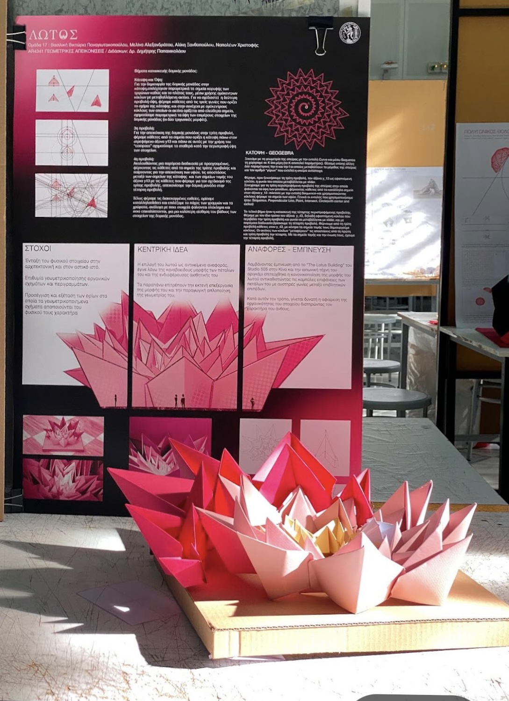
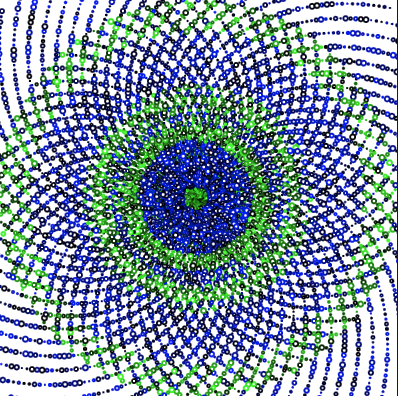
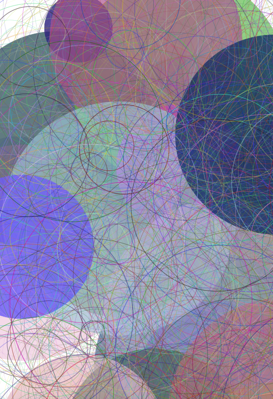
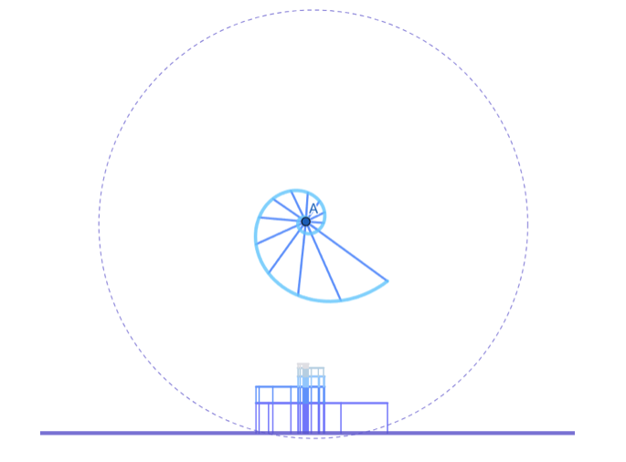

Projects

Lotus Flower

Two Colour Spiral-p5*js project

Piet Mondrian-p5*js project

Various Circles-p5*js project

Seashell Project

Architectural Design Project - Art Exhibition
Vasiliki Victoria Panagiotakopoulou 2025